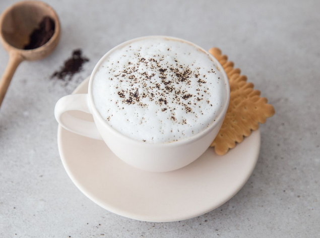

Welcome to All About Coffee!
Coffee is a popular beverage and an important commodity. Tens of millions of small producers in developing countries make their living growing coffee. Over 2.25 billion cups of coffee are consumed in the world daily. Over 90 percent of coffee production takes place in developing countries — mainly South America — while consumption happens primarily in industrialized economies. The coffee industry has a rich history, dating back to its discovery in Ethiopia. Unroasted, or green, coffee beans comprise one of the most traded agricultural commodities in the world; the commodity is traded in futures contracts on many exchanges, including the New York Board of Trade, New York Mercantile Exchange, New York Intercontinental Exchange. Important trading and processing centers for coffee in Europe are Hamburg and Trieste.
What to Expect
This page will contain information about the most important commodity that is coffee. At the bottom of this page are two other links leading to our web pages aptly named: About Us and Contact Us.
- About Us
- In the "About Us" page you will find information in the form of the various types of coffee, the history behind it, various brewing methods and health benefits
- Contact Us
- In the Contact Us page you will find a FAQ section, a contact form, social media links and our location
Look at these various types of coffees
Caffe Latte
This is a picture of a "latte" cup of coffee. Is a coffee drink of Italian origin made with espresso and steamed milk, traditionally served in a glass.
Cappuccino
Cappuccino is an espresso-based coffee drink that is traditionally prepared with steamed milk including a layer of milk foam.
Frappuccino
Frappuccino is a line of blended iced coffee drinks sold by Starbucks. It may consist of coffee or crème base, blended with ice and ingredients such as flavored syrups and usually topped with whipped cream and or spices.
Here are some fun facts about coffee:
- Coffee is a fruit
- Beethoven loved coffee
- Brazil grows the most coffee in the world
- Finland consumes the most coffee in the world
- The most expensive coffee in the world costs $600 per pound
Quote of the Day
"Whether it helps you make the most of your day, or the perfect excuse to catch up with old friends, coffee plays a small but important part in our everyday lives. - Some guy"